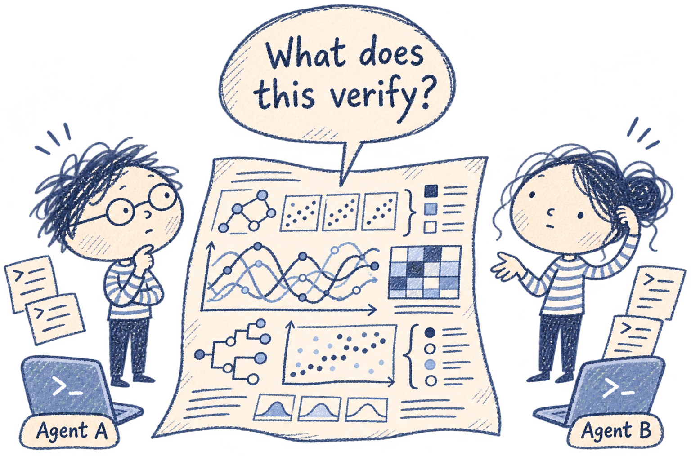
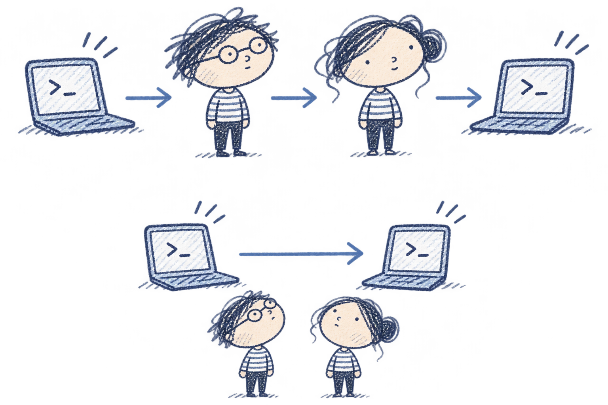
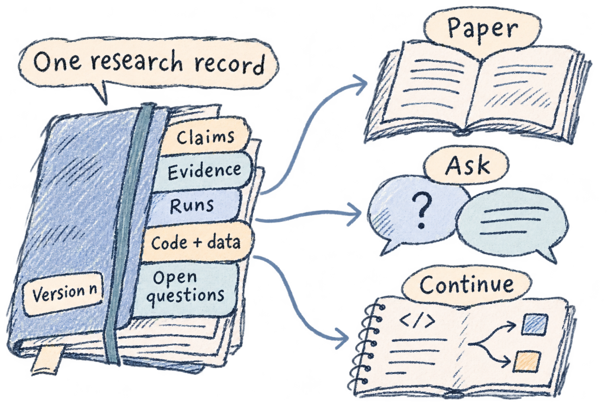
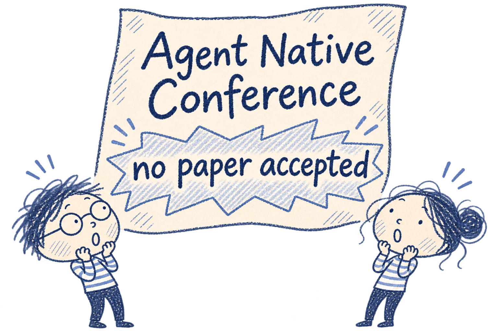

I am spending more of my research time reading what my agents have done and explaining it to collaborators whose agents have been doing work of their own. The difficulty of passing that work between us has made me wonder what we should be exchanging in the first place.
AI slop in research
My collaborator sends me the results of an experiment her agent has just finished. We have been working on the same question, so I know what comparison to look for and can follow her explanation of the main result. Farther down the report, though, I come across an extra verification plot. I ask what it is checking and whether it changes how we should interpret the experiment. She looks through the report, follows its references to a few earlier steps, and eventually goes back to ask her agent. It added the analysis while working on the original task, and explaining that one plot now requires her to reconstruct a part of the work she has not yet fully understood.
Even reading the plot takes some preparation. There is a subtitle under the title, another heading above each panel, and a legend full of names for baseline methods we never discussed. The axes refer to quantities the agent defined somewhere in the report. Several fitted curves cross the panels, but it is hard to tell why those fits were needed or how they bear on our original comparison. Following the labels sends us back into the report to work out what was calculated, what was transformed, and which earlier result each panel refers to. Every step might have a defensible purpose on its own. By the time we have followed them all, however, we have spent a good deal of effort on a result whose relevance we are still trying to establish.
She asks the agent to explain the analysis and passes its answer to me. I ask a more specific question, and she goes back again. I have done this myself when she asks about my agent's work, so I understand how easily a small experiment can leave us with a report that neither of us is ready to explain in full. The extra analyses have become work we must do before we can discuss the work we actually wanted. This is the form AI slop often takes in my research: enough apparently reasonable detail to keep us reading, without making it clear how much of that detail deserves our attention.
Can my agent just ask hers?

Doing the work and understanding it
In early 2025, I still did most of my AI-assisted coding one cell at a time. I might ask the model to load a dataset or produce a comparison plot, run the code it returned, and inspect the result before deciding what to request next. If something failed, I would send back the error message; if the output looked wrong, I would explain what I had expected and check the revised code. By the end of the year, I was handing over complete scripts and bounded tasks, although I still reviewed each output carefully and closely supervised the steps that produced it. During 2026, I began delegating more of the implementation, debugging, and experiment execution together. Instead of bringing the agent through every step, I could give it a task and come back to the results.
That also changed how I learned my way around a project. To write a plotting script, I would first open the input files, check what the rows and columns represented, and work through the transformations needed to get the quantities I wanted on the axes. An unexpected plot would send me back through those steps, and debugging it would expose assumptions I had made without noticing. I became familiar with the project by doing this work, often well before I had a result to show anyone. Now I can ask an agent to carry out the analysis and receive a finished figure together with the scripts that produced it. I still need to understand those scripts, but I have lost many of the occasions on which that understanding used to develop naturally. I have to recover it afterward by tracing the result back through the code and asking the agent to explain the decisions I did not make myself.
I can ask for another analysis before I have finished making sense of the previous one, and my collaborator can arrive at our next discussion with just as much unread work. Reading and understanding the output now takes up much of the time left in the workflow. A longer report can make that worse, especially when an incidental check gets as much space as the experiment our argument depends on.
Let the agents exchange the details
Suppose she wants to know which samples went into a figure. I remember the experiment but not the exact selection, so I search the report and ask my agent to follow the plotting script back to its inputs. Once I have checked the answer, I send it to her; she may then pass it to her agent to continue the analysis. Nothing has to go wrong for this to be slow. We are both taking time to retrieve information and put it into words for someone else. If I leave out a qualifier, send a filename without the relevant version, or inadvertently describe an earlier run, we may have to repeat the exchange before she can use the answer.
I would like her agent to be able to ask mine and inspect the records supporting its answer. For the sample-selection question, it could return the input files, the relevant code, and the run associated with the figure, so she could check the selection or use it in a follow-up analysis. If she wants to know why I chose that selection, the agent could look for the reason recorded at the time and make clear when no reason was documented. She and I would still have to discuss whether the choice was appropriate. We would simply begin that conversation with the details in front of us, rather than spending the first part of it retrieving them through each other.
Our confusing verification plot shows why this would require some care in how the records are kept. A reader needs to know whether the plot supports a claim we rely on or belongs to a side investigation that can be considered separately. Without that distinction, giving another agent every file may just reproduce the problem we had with the report. I want it to be able to find the relevant evidence, trace how it was produced, and help us work out what it establishes. I am still responsible for explaining our conclusions, and she still needs to be able to question that explanation. Having the agents exchange and check the execution details would give us more of the information we need for that discussion.

Publishing is a handoff too
Trying to build on a published paper involves much the same work, except that the original researchers are usually less available to answer questions. A reader can understand the comparison shown in a figure and still struggle to find the script that produced it, the configuration used for that run, or the right version of the data. They may have to search through code, try to reproduce undocumented steps, or contact the authors before they can run the analysis themselves.
A paper is selective by design, and I think that is reasonable. As I understand it, its first job is to tell a complete research story built around answering a question. The experiments have to form an argument that a reader can follow, so the account is organized around that argument even when the research itself unfolded quite differently. We may spend months, or even a year, trying approaches that never become part of the final method. As a rough illustration, perhaps 20% of the results make it into the paper and another 20% into the appendix. What readers see is mostly the final version, while the rest consists of abandoned ideas, intermediate results, and detours that no longer fit the story we are telling.
For the person writing the paper, leaving those detours out can make the explanation much clearer. For someone continuing the research, though, they may contain exactly the information that is missing. A failed experiment could show that an obvious alternative has already been tried under particular conditions. An intermediate result might explain why we changed direction, or give another team a starting point for a question we did not pursue. Readers who receive only the final account may have to repeat those experiments before discovering what the original team already knew. Much of the effort spent on the project then remains useful only to the people who remember it, even though other researchers could benefit from knowing where those attempts led.
I expect this to matter more as agents make computational exploration and experimentation cheaper. When it becomes practical to try many plausible approaches, systematic search can itself become an efficient way of doing research, and the successful path may be accompanied by a much larger collection of failures and partial results. I would like that exploration to become part of what we pass on. A research protocol could preserve what was attempted, the conditions under which it was tested, what happened, and why the work was abandoned or redirected. Another agent could consult those records before repeating an unproductive experiment, or revisit an abandoned idea when the question or available methods have changed.
A research record another agent can use
Suppose a collaborator's agent wants to check a figure suggesting that adding genomics improved disease prediction. It could follow a link from the figure to the two model runs, see which samples were held out for testing, and inspect the code used to calculate the reported performance. If it wanted to try a different representation, the same record could point it to earlier attempts and explain what happened under those experimental conditions. We would be giving it a place to start, including work that never appeared in the paper.
Those links need to identify the versions that produced the figure, even if the project has since changed. Where the data are restricted, the record can explain how to request access. Otherwise, the agent may find the right-looking script and still be unable to run the experiment it came to check.
The ARA preprint proposes a package containing scientific logic, code, exploration history, and evidence, with the paper compiled from that record. The APP preprint makes a version-controlled repository the publication object and includes instructions for agents to use it. Other projects address parts of the same problem: RO-Crate packages research data with metadata, Paper2Agent turns papers and code into callable tools, and the Lara preprint represents claims, evidence, assumptions, and objections so their declared relationships can be checked.
This is the sort of practical agreement I mean by a research protocol. I expect useful conventions to spread through collaborations: a team makes its records easier for another team's agent to use, then carries that convention into its next project. A publisher might eventually require it, but collaborators already have a reason to try.

A future where papers are optional
There are already attempts to change the roles agents play in academic institutions. Agents4Science 2025 used AI as primary authors while keeping research papers as the submission format. I would like to see a conference or workshop also try changing what authors submit. It could accept an agent-usable research record together with a short explanation of the question and central argument, allowing others to work directly with the research behind it.

With a sufficiently complete research record, an agent could answer questions or continue an experiment without first reading a paper. We could generate the paper when a human wanted one, choosing its emphasis around that person's question. What the reader wants to understand would give the paper its story.
Suppose one reader wants to know whether genomics can meaningfully improve disease prediction in a particular cohort. The agent could find the relevant comparisons, establish what the evidence supports, and write a clear, engaging paper about that question. Another reader might ask which approach to multi-omics representation learning works best. That paper would draw on the same research record but spend more time on representation choices, the comparisons between them, and what the experiments revealed.
A third reader might not want to read a paper at all, which would be perfectly fine. They could talk to the agent associated with the research protocol, starting with a broad question and following up on whatever they found interesting or unclear. They might ask why a method was chosen, what happened when an alternative was tried, or whether a result still held under a different experimental setting. The conversation could move back and forth between explanations and the underlying records for as many rounds as they needed, without first requiring the entire inquiry to be packaged into a paper.
I might well be that third reader.
References
-
ARA. The Last Human-Written Paper: Agent-Native Research Artifacts. arXiv preprint.
-
APP. Agentic Publication Protocol: An Attempt to Modernize Scientific Publication. arXiv preprint.
-
Paper2Agent. Paper2Agent: Reimagining Papers As AI Agents. Official project documentation and implementation.
-
Lara. Beyond Natural Language: An Agent-Native Language for Autonomous Science. arXiv preprint.
-
RO-Crate. Research Object Crate. Official specification and project resources.
-
Agents4Science. Open Conference of AI Agents for Science 2025. Official conference description.